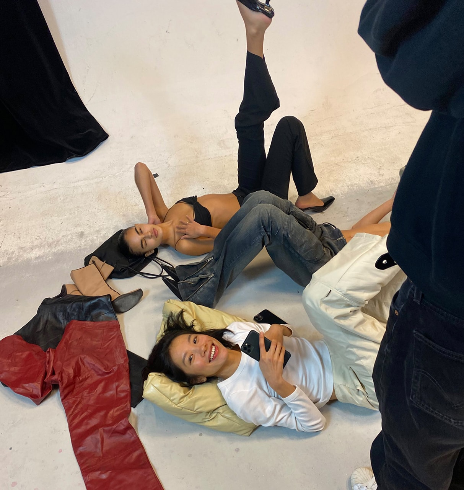
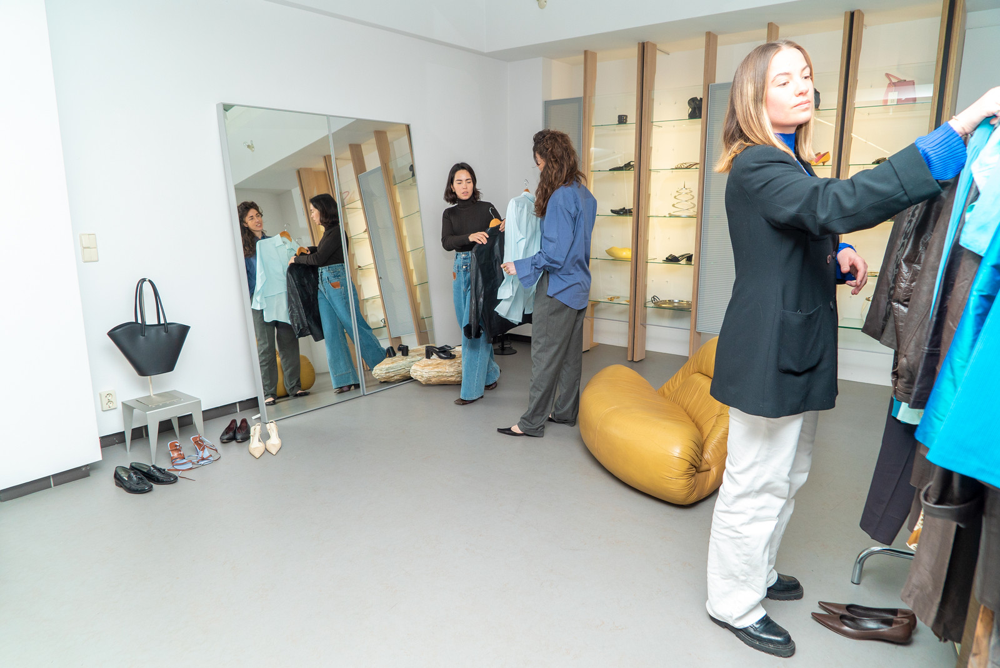
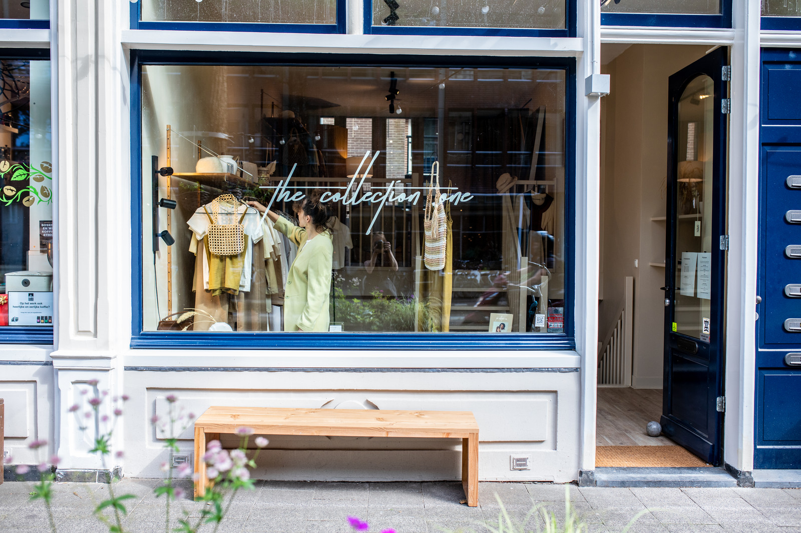

NHỎ GIRL
NHỎ GIRL is a vintage store mainly focused on amazing items with a 90's/2000's style.
Founded by Amy Pham Thi, this spot features items from some of the most sought-after designers
from one of our favorite eras of fashion; from Ann Demeulemeester shoes from 1999 to Y2K Prada items.
You can visit their showroom in the heart of Amsterdam by appointment to admire, try on and buy the
fashion gems with your own eyes.

Best :
Eclectic and contrarian
Info :
- Price Range: $$$
- Busy: By appointment
- Crouwd: Fashion people / influencers
Ensō Vintage
Ensō was founded in 2019 by Andrea and Liseth Ensō (then Serendipity Vintage) to bring positive
change to the fashion industry. With their store, the duo wants to show that you can be part of
a non-polluting fashion world without having to compromise on style. Ensō has a curated collection
of very high quality vintage clothing, which contribute to a timeless style. From Wandler to Rotate
and their own upcycled collection, in their beautiful store in the heart of the Jordaan you will
find unique items that will give your closet a true upgrade.

Info :
- Price Range: $$$
- Busy: moderate
- Crouwd: Chic young women
The Collection One
At The Collection One you will find sustainable fashion brands in addition to vintage items.
The perfect place to find both a unique and conscious fashion purchase. Clothing made from natural
materials in earthy tones ensures that you will enjoy wearing these timeless items for years to come.
You can find their cool items via the webshop or in the store on Czaar Peterstraat, which is definitely
worth a visit.

Best :
Alternative & authentic
Info :
- Price Range: $$$
- Busy: moderate
- Crouwd: Environmentalists